品牌如何長出一個空間？
What does a brand need to believe in before it builds a world?

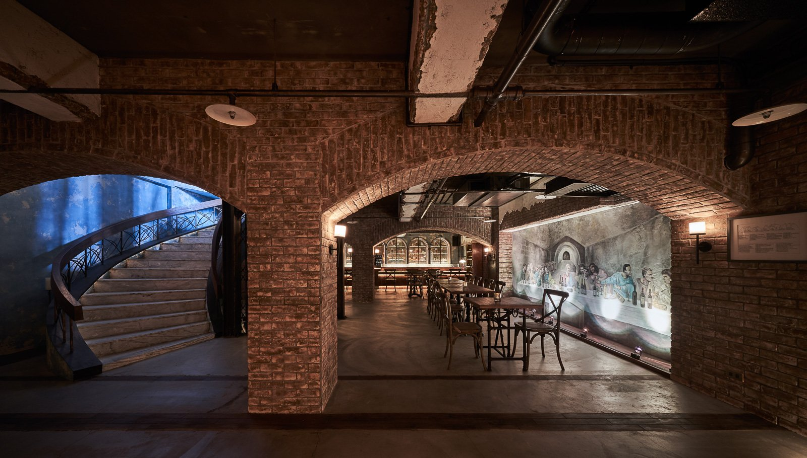
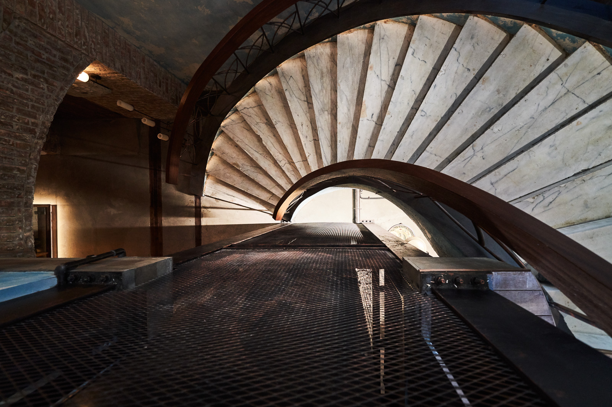
01
樂活想把歐洲的酒窖帶回來。不是作為風格，而是作為一種感受。磚牆、拱頂、微光，那種只有真正走進去才能理解的沉默與重量。我們的工作，是把這件事變成真的。
La Vie wanted to bring back a European wine cellar — not as a style, but as a feeling. Brick walls, vaulted ceilings, dim light: the kind of silence and weight that can only be understood by walking in. Our job was to make it real.
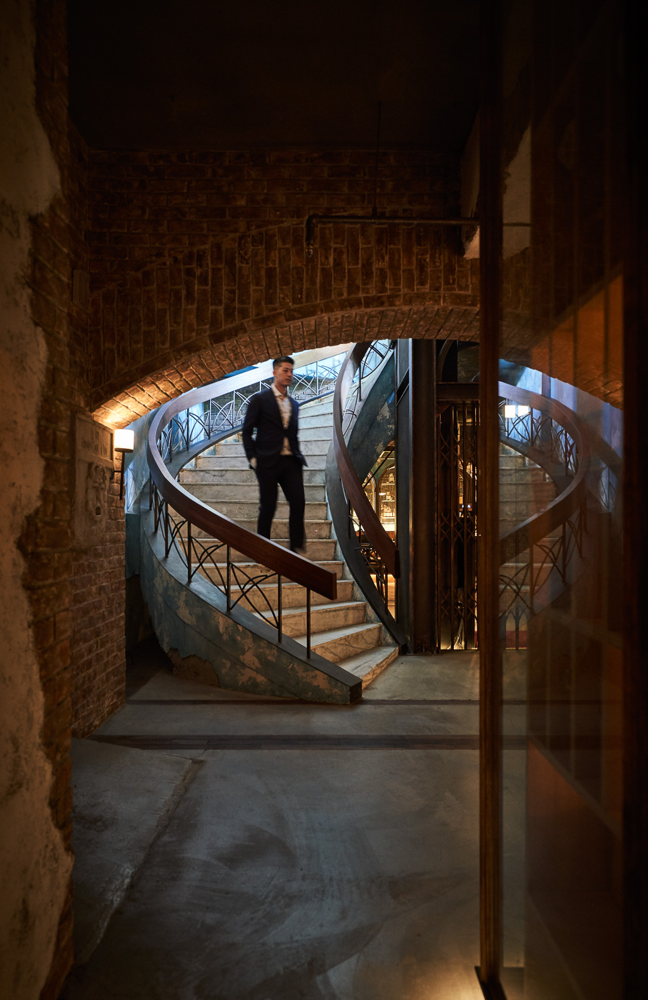
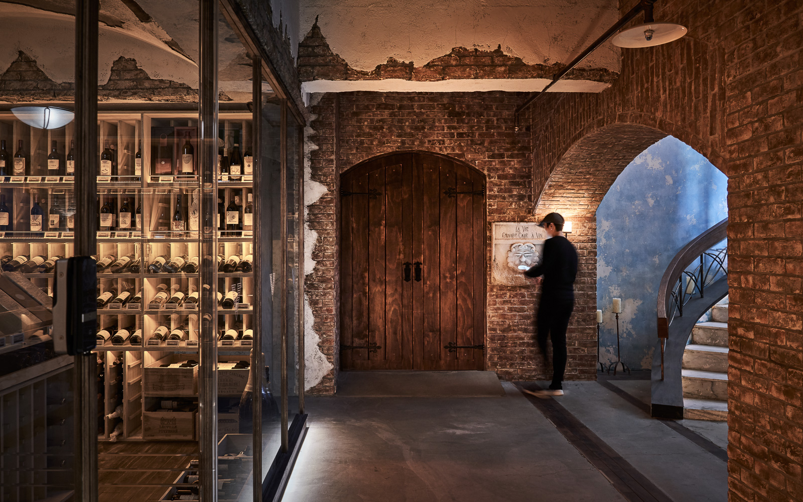
02
我們沒有去找現成的風格參考。從業主帶回來的感受出發，去還原那個感受背後的空間語言——中世紀歐洲酒窖的磚牆邏輯、拱頂下光線的行為方式、地下空間應有的沉默感。我們要建造的不是一個「看起來像那個時代」的地方，而是一個「本來就屬於那個時代」的地方。
We didn't look for existing style references. We started from what the client brought back and reconstructed the spatial language behind that feeling — the brick logic of medieval European cellars, how light behaves under vaulted ceilings, and the silence that underground spaces demand. What we wanted to build was not a place that "looks like that era," but one that "belongs to it."
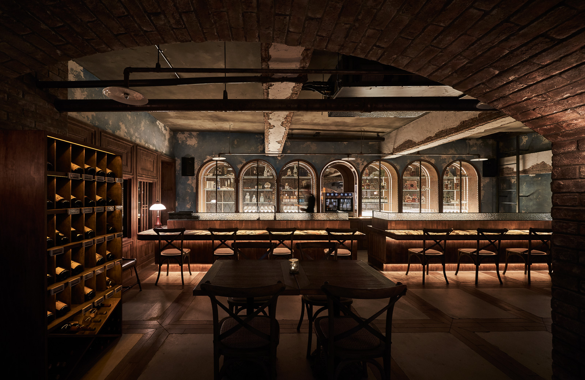
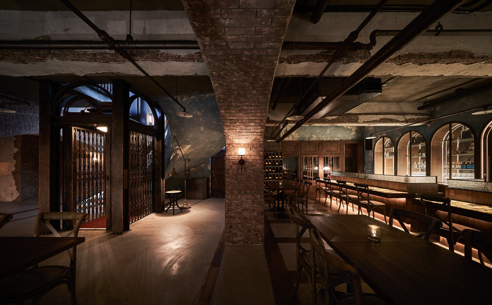
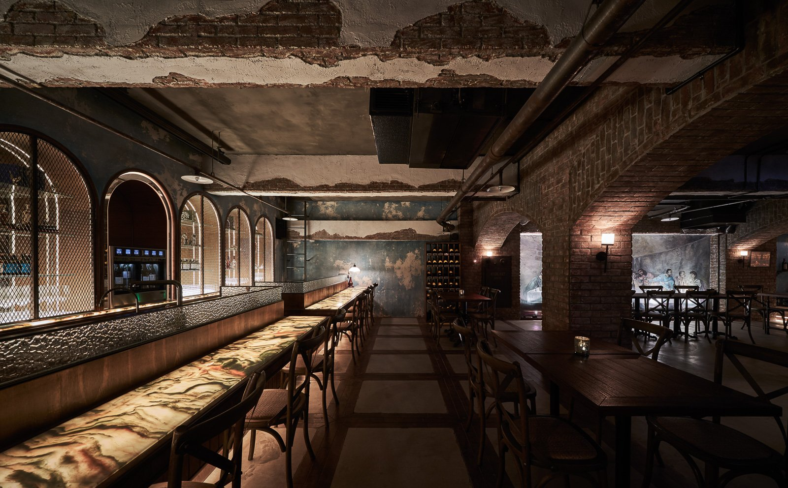
03
這兩件事的差距，就是那兩根柱子。現代建築的跨距早已解決了承重問題，中間不需要柱子。但中古世紀的地下室不會有這種跨距。沒有柱子，空間就會說謊。所以我們把它們放回去，不是為了裝飾，而是為了讓整件事保持誠實。牆上那幅壁畫借的是《最後的晚餐》的構圖骨架。坐在正中央的是勃根地之神，祂的信徒圍繞左右，桌上不是麵包，是一排勃根地。壁畫師用那個時代的筆觸作畫，透視點技法讓地下空間在視覺上向後無限延伸。品牌的信仰體系，被畫進了牆裡。
The gap between those two things is exactly those two columns. Modern construction solved the load-bearing problem long ago — no columns needed. But a medieval basement wouldn't have that kind of span. Without columns, the space would lie. So we put them back — not for decoration, but to keep the whole thing honest. The mural on the wall borrows the compositional framework of The Last Supper. At the center sits the god of Burgundy, followers on either side, and on the table — not bread, but a row of Burgundy. The muralist painted with period brushwork, using perspective techniques that visually extend the underground space into infinity. The brand's belief system was painted into the walls.
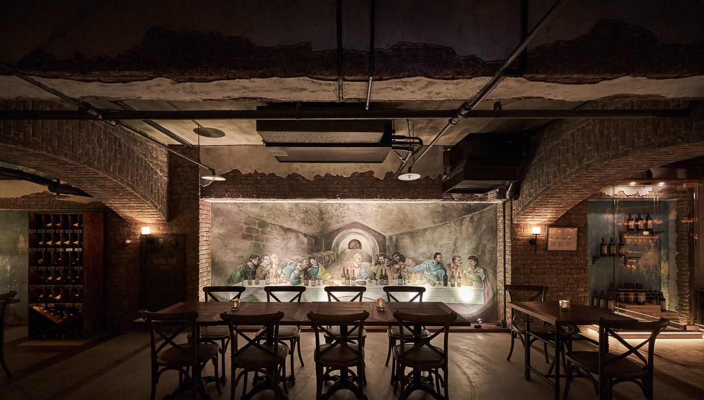
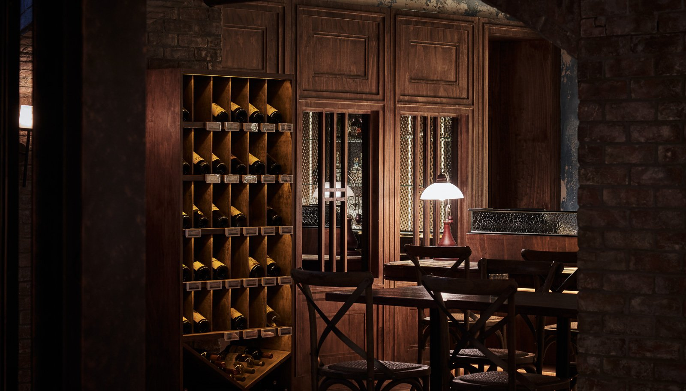
04
門沒有鎖頭。不是因為不需要安全，而是因為鎖頭會破壞整件事的氛圍。在你走進藏酒廊道之前，你會在紅磚牆上的獅頭石雕前停下來，打開手機裡的 APP，把 QR Code 對著它。木門開啟。你踏進去，廊道的燈跟著你的位置亮起，照亮你腳下那一格，其他地方保持暗。取完酒，離開，燈滅，門關。進入一個認真的地方，應該有一個認真的動作。儀式感不是表演，是品牌氛圍的入口。門關上之後，是另一個時間維度。斑剝的牆面、紅磚拱頂、粗礪的地面，在微光裡呈現的不是殘破，而是時間的密度。木作酒架、鑄鐵壁燈、錘紋金屬吧台面——每一個材質都在說同一件事：這裡對待事物的方式，和外面不一樣。
The door has no lock — not because security isn't needed, but because a lock would break the atmosphere. Before entering the wine corridor, you stop at the lion-head stone carving on the red brick wall, open the app on your phone, and hold up the QR code. The wooden door opens. You step in, and the corridor lights follow your position, illuminating only the square beneath your feet while everything else stays dark. Take the wine, leave, lights off, door closed. Entering a serious place should require a serious gesture. Ritual is not performance — it's the entrance to the brand's atmosphere. Beyond the door is another dimension of time. Weathered walls, red brick vaults, rough floors — in the dim light, what you see is not decay, but the density of time. Wooden wine racks, cast-iron wall sconces, hammered metal bar tops — every material says the same thing: the way things are treated here is different from the outside.
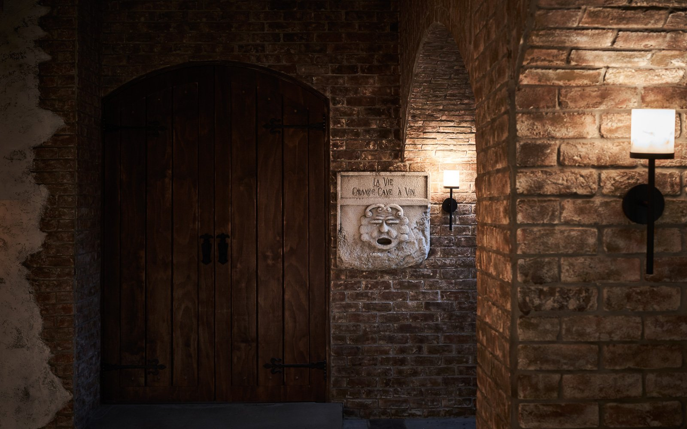
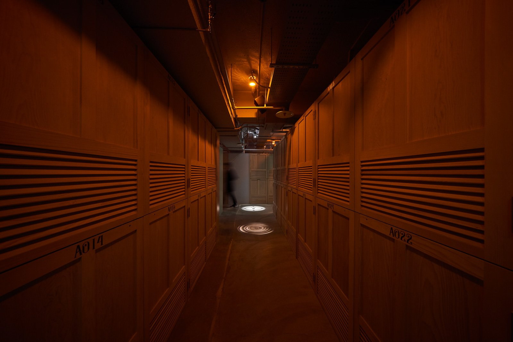
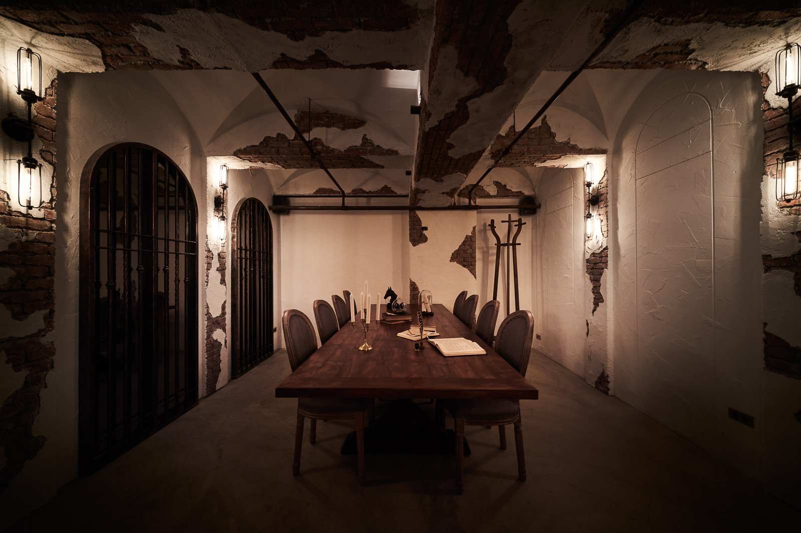
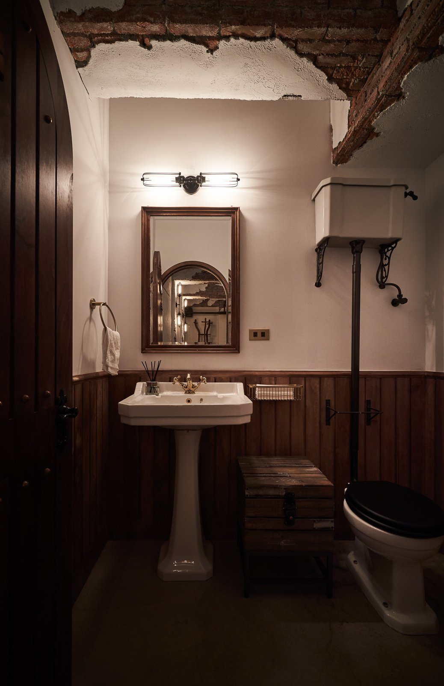
05
酒窖提供會員個人酒格，溫度、濕度、光照全部受控。APP 可以遠端管理，燈光只在你需要的時候亮起。這不是噱頭，是對一瓶認真的酒應有的對待方式。這裡發生的事，圍繞著「藏」與「分享」——品酒、選酒、與懂酒的人坐下來聊。但在這一切之外，還有一些我們一起做的：Logo 的重新設計、品牌色的重新定義、以及一件專門為酒窖訂製的披風，因為走進恆溫空間會冷，而那件披風的設計語言，必須跟這個空間說的是同一句話。沒有一個細節，是我們覺得「那不是我們的事」。
The cellar offers members private wine lockers — temperature, humidity, and lighting all controlled. The app manages everything remotely; lights turn on only when you need them. This isn't a gimmick — it's the proper way to treat a serious bottle of wine. What happens here revolves around "keeping" and "sharing" — tasting, selecting, sitting down with people who understand wine. But beyond all of that, there are things we did together: the logo redesign, the redefinition of brand colors, and a cape custom-made for the cellar — because walking into a temperature-controlled space gets cold, and the design language of that cape had to speak the same sentence as this space. Not a single detail was something we thought "wasn't our job."
All Photos